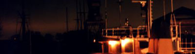

|
- from the fictional Northern Lights Issue of Powerbase Alpha.

Going by ferry across the Baltic Sea is the default mode of travelling
between Finland and Sweden. The traffic is quite heavy, with several departures
a day and a plaethora of obscure shipping lines to choose from. Towering
above the competition are the mammoth companies Silja and Viking. Like
some mythological twin brothers, they are eternally locked in a battle
for absolute power and domination.
The Silja line of ships differs in subtle ways from the Viking line.
Silja employs some kind of musical trench warfare, different tunes streaming
from unseen speakers everywhere, tailor-made location-specific muzak,
optimized for working on subliminal levels.
As a journalist trying to sample the quaintness of the Norse travellers'
minds that frequent these boats, let me start out with a short description
of the usual cast of characters that haunt the mighty vessels on the Baltic
Sea.
- The first, most ubiquitous group is the mass of faceless travellers
that appear so generic that they practically belong to the interior.
- The second group [class] are the dead-drunk salarymen that try to score
with baroquely made-up Russian 30-somethings that wobble around the disco
and nightclub floors.
- The most visible group of them all are the party people, who travel
the boats under the delusion that it is a classy way to spend a weekend.
These people believe that human suffering would end with the abolition
of tax on alcohol, cigarettes and petrol.
- Another group are the gypsies that keep court in one of the public
spaces or under a large staircase. With their staccato language and their
total disregard for ordinary, normal, society they constitute a vital
ingredient in the funky, multicultural melting pot that is assembled beneath
the wings of the mighty tycoons that govern these transit operations.
[another distinct caste are the innocent bystanders; people who has to
travel the boat to get to the other shore, and who isn't into boating
for the experience of the ride itself - all other parties are interested
in the travel, this group would abolish travel if they could as it is
a waste of time, money and sanity]
the
main street with lightshow (that is always on)
The boats offer interesting vistas for the journalists, the spectacle-hungry
people of all ages that travel the boats for the quaint atmosphere. The
boat on the picture above has a big aisle - a city-like street that is
the heart of the boat. It has its own little cafeterias and shops just
like a *real* city, only it is just make-believe. The designer of this
boat apparently ripped the design right out of Logan's Run - a simulation
of a Mega-City beneath a canopy of shielding plastic. There's an array
of disco spots projecting gaily colored lights and moving images onto
the white plastic surface of the fake houses along the main street. What
masterful cybernetic system runs this impeccable operation?
The boats are mediated, and virtual conflicts of a virtual crew are taken
to heart of millions of boob tube addicts in both Sweden and Finland.
The show is called Rederiet.
plastic
windows look down on a fake world
Back to the real-time boating experience, ruminations after an intense
shopping experience... Browsing the tax-free store, I could find *nothing*
I wanted. Don't get me wrong here, I'm a cigarettes and whiskey man, but
all these bottles and boxes of cigarettes were so close to pure simulacra.
The people with bulging eyes in their virtual paradise, where there is
no tax on their favorite drugs and high caloric foods. I consider myself
a chocolate freak, but I can find no respite in buying a 1 kilo box of
Snickers.
Sounds of jolly string orchestras infest the airspace and sweeps the
store in an airconditioned mist of cheap unreality. To add to that effect
a pagan march is on it's way on main street, the big fake road, little
children on a hollow crusade. Dressed to impress the most hardened pedophile,
charming little hats and elven dresses, side by side, on a line, workin'
the street. The parade starts beneath the casino in the stern of the boat
and ends at the aft, in front of "Joe's bar". Some children
are dressed up as mythical figures, some as firemen, or police. What is
the purpouse of this ritual? Why is it repeated several times, during
every voyage? Is it to ensure the boat arrives safely? Is it a token of
worship of the sea-gods? On main street the marvel is pipers, playing
jolly songs [of days long gone] from the nooks and crannies in the plastic
housing. Not only the children dress up on Silja Line; as soon as the
boat is good away from the port, old and young show up on main street
dressed in fine clothes, window-shopping (like fine folx used to do on
Sundays). This is an orderly, well rehearsed and important ritual for
the bourgeoise, where they pretend to live in civilized abolition, but
when they are really burning for the hour the tax-free store open it's
pearly gates.
beer
vending bike used on main street.
As I had been wandering around the tax-free store for a good twenty minutes
I saw something that froze my heart, I didn't know whether to freak out
or just gawk at the spectacle that was taking place in front of my eyes.
A fully-dressed, card carrying member of the Clowns guild was putting
on a little show in front of the Tequila-shelf. Jokingly he worked hard
to convince the shoppers to try on a new blend of booze. Alcohol is such
a uniting factor in the world. People might be strange "over there"
but, hey, they are just like us, they take the same drugs.
- K. Grahn.
|